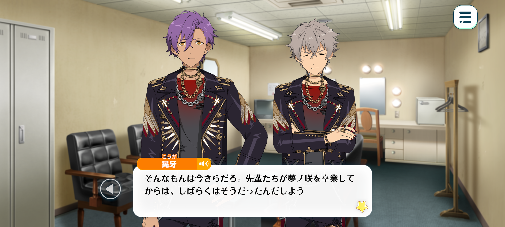
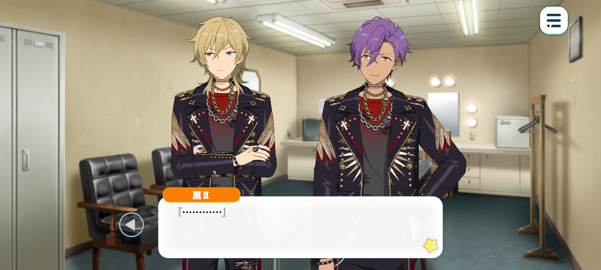

PSYCHOBREAK — Chapter 5



Adonis: Thanks to HELLSING, which now operates as a subsidiary unit, UNDEAD has been able to broaden the scope of its activities.
I believe we're now in a position to offer something to satisfy every fan.
Still, I do feel a little lonely, knowing that we're working separately from our real senpai.
Koga: That's nothin' new at this point. Things were like that for a while after they graduated from Yumenosaki, anyway.
We've just gone back to how things used to be.
Adonis: Even so, I can't help feeling lonely. But there's nothing we can do about it. Given the circumstances, this is probably the best solution.
We'll maintain the current arrangement and carry on with our idol activities while tracking down the mastermind behind the AIIE experiment, along with anyone else involved.
Then we'll expose the truth and get to the bottom of this whole affair.
We'll just have to decide what to do next when the time comes.
Koga: Thinkin’ ain't our job. No point buildin’ bridges that are gonna be burnt down. All we can do is focus on the problems in front of us.
Hopefully nothin’ goes to shit this time.
Adonis: This is a dangerous path we're walking. All we can do is give it everything we've got and try not to stumble.
Koga: Yeah. We gotta track down whoever's behind this whole mess and beat the shit outta them before things get any worse.
Adonis: ...Could I really be the culprit, after all?
Koga: Huh?! Why the hell would you be the culprit? There's no way it's you, Adonis! You can't even bring yourself to kill bugs!
Adonis: Do you remember the dream we had during the experiment?
Something strange happened in that dream. Although the details were slightly different, it was still a retelling of events from the past.
The so-called ‘vampires’ were actually delinquents who went on rampages throughout the town, making it increasingly dangerous.
And I, Otogari Adonis, was supposedly the leader of those ‘vampires’.
Koga: That was just somethin’ the Sakuma-senpai from back then said, wasn't it? In the end, even in the dream, they let you go because there wasn't enough evidence to prove anythin’. Or whatever.
Adonis: Indeed. And the ‘vampires’ continued their rampage.
Hasumi-senpai should have used his authority as Student Council President to lead Deadmanz in putting a stop to the delinquents, but...
But in the dream, the vampires continued to run wild.
Not even the Sakuma-senpai from back then could persuade them to stop.
They were originally supposed to be Sakuma-senpai's followers, but apparently, they'd come to worship a new leader instead, and would only listen to what that person said.
Koga: And you're saying that new leader was you?
What, you think you're on the same level as Sakuma-senpai or somethin'?
Adonis: Of course not. I don't have that kind of charisma. But there aren't any other suspects, either. Even if the dream was a distorted recollection of the past, I can't imagine Sakuma-senpai getting it wrong.
If Sakuma-senpai said I was responsible, then it must be true.
Koga: What, you think he's God or somethin'? Like he can never be wrong? What the hell do you take that guy for?
I mean, I'm curious about that myself, but it was only a dream. The real problem is the seriously fucked-up reality we're dealin’ with right now.
Adonis: …Is this really reality? Could this be a dream, too?
Somehow, none of this feels real. Everything seems so hazy, almost dreamlike.
Koga: Well, I know what's happening is pretty damn far-fetched. But whatever the case, we're alive, and our souls are here, so—
We'll just have to keep livin' our lives here, one way or another.
Rei 2: —You two finished talkin’?
Koga: …
Rei 2: Okay cool~. We're done over here. Don't worry, I fobbed Hasumi off just like you told me to.
I'm still havin' a bit of trouble imitatin' his old man way of speakin', though, so he got a little suspicious.
But whatever. There's no way that guy could figure out what's really goin' on with us.
Adonis: That's true. Good work dealing with Hasumi-senpai's questions, Sakuma-senpai, Hakaze-senpai.

Kaoru 2: …
Koga: Oi, ya don't hafta show those things any respect. Well, you're the kinda guy who talks nicely to a harmonica, so I guess that's just how you are.
Fake Sakuma-senpai’s alright, but fake Hakaze-senpai doesn’t even talk t’us, let alone look at us—
No need t’respect people like that.
Kaoru 2: Hey, so–
Could you not talk to me so much? I’m not into dudes so I’d rather not put in any effort to dealing with them~♪
That's why I haven't been talking to you. I'm doing my job properly, so there's no problem, right?
Koga: W-wow… Somethin’ weirdly nostalgic ‘bout this version of Hakaze-senpai.
Looks like these guys are recreatin' what we were like a little while ago. So this fake Hakaze-senpai is from back when he was still puttin' on that playboy act, huh?
People'll get suspicious if they hear me callin' them fakes, so I should probably stick to ‘playboy’ and ‘vampire bastard’.
Rei 2: Do what ya like.
By the way, Bouzu wasn't just there to grill us. I reckon he's actin' as a go-between for us and the higher-ups at Rhythm Link, too.
Looks like they're pretty damn pleased with what we've been doin' lately, and now they're sendin' us on tour.
So we're gonna travel all over the country, singin' for the fans who love our immoral, radical side.
Rock, rock, rock ‘n roll ♪
Sounds great, don’t it? Dream come true, eh, Wanko?
Koga: …You guys aren't the ones I wanted to sing with, though.
There's nothin' I can do about that. Until we find out who's behind all this, I've just gotta play along.
But remember this - if you try anythin' funny, I won't hesitate to crush you.
I'm startin' to sound like Adonis, but... I'll protect UNDEAD.